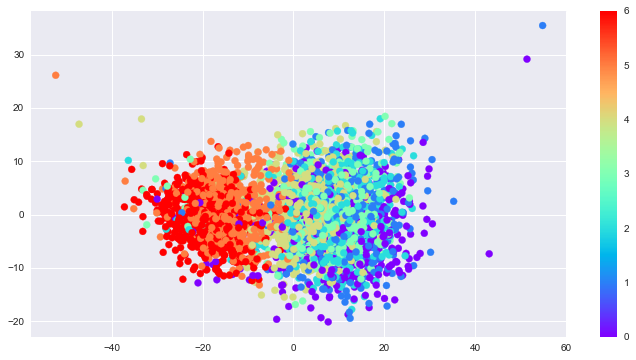
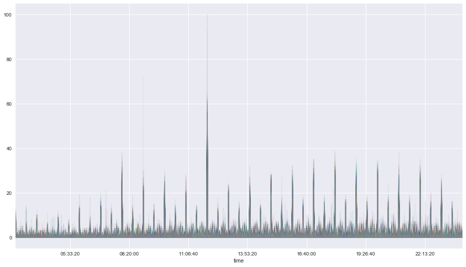

In [1]:
%load_ext autoreload
%autoreload 2
import matplotlib.pyplot as plt
import seaborn as sns
%matplotlib inline
import pandas as pd
from sklearn.decomposition import PCA
import numpy as np
import datetime
from src.data.get_data import get_url_data
from src.features.df_functions import str_pad, convert_time
Load data¶
In [2]:
%%time
data = get_url_data()
...loading csv
CPU times: user 11.1 s, sys: 1.14 s, total: 12.2 s
Wall time: 12.8 s
In [3]:
len(data.columns) ==26
Out[3]:
True
In [4]:
print('Number of observations: {:,.0f}'.format(len(data)))
Number of observations: 1,827,766
In [5]:
# converts time to timestamps and dconvert
data = convert_time(data)
In [6]:
len(data.index.time)
Out[6]:
1827766
In [9]:
# generate counts for timestamps
data_time = data['Time Occurred'].groupby(data.index.floor('1min')).agg([ 'count'])
display(data_time.head())
| count | |
|---|---|
| Date | |
| 2010-01-01 00:01:00 | 3 |
| 2010-01-01 00:02:00 | 1 |
| 2010-01-01 00:05:00 | 2 |
| 2010-01-01 00:10:00 | 6 |
| 2010-01-01 00:15:00 | 4 |
In [7]:
fig, ax = plt.subplots(1, 1, figsize=(12, 6))
title = 'Monthly crime reports'
data_time[data_time.index <=
'2018-09-01'].resample('M').sum().plot(ax=ax, legend=None, title=title)
plt.ylim(0, None)
plt.xlabel('')
Out[7]:
<matplotlib.text.Text at 0x128a1a4e0>

In [8]:
pivoted = data_time.pivot_table('count', index=data_time.index.floor('1min').time, columns=data_time.index.date, fill_value=0)
pivoted.head()
Out[8]:
| 2010-01-01 | 2010-01-02 | 2010-01-03 | 2010-01-04 | 2010-01-05 | 2010-01-06 | 2010-01-07 | 2010-01-08 | 2010-01-09 | 2010-01-10 | ... | 2018-09-13 | 2018-09-14 | 2018-09-15 | 2018-09-16 | 2018-09-17 | 2018-09-18 | 2018-09-19 | 2018-09-20 | 2018-09-21 | 2018-09-22 | |
|---|---|---|---|---|---|---|---|---|---|---|---|---|---|---|---|---|---|---|---|---|---|
| 00:01:00 | 3 | 8 | 4 | 2 | 5 | 3 | 5 | 3 | 6 | 10 | ... | 7 | 6 | 10 | 10 | 6 | 13 | 9 | 4 | 6 | 3 |
| 00:02:00 | 1 | 0 | 0 | 0 | 0 | 0 | 0 | 0 | 0 | 0 | ... | 0 | 0 | 0 | 0 | 0 | 0 | 0 | 0 | 0 | 0 |
| 00:03:00 | 0 | 0 | 0 | 0 | 0 | 0 | 0 | 0 | 0 | 0 | ... | 0 | 0 | 0 | 0 | 0 | 0 | 0 | 0 | 0 | 0 |
| 00:04:00 | 0 | 0 | 0 | 0 | 0 | 0 | 0 | 0 | 0 | 0 | ... | 0 | 0 | 0 | 0 | 0 | 0 | 0 | 0 | 0 | 0 |
| 00:05:00 | 2 | 2 | 2 | 3 | 2 | 3 | 3 | 2 | 0 | 3 | ... | 3 | 1 | 4 | 1 | 1 | 2 | 2 | 5 | 5 | 2 |
5 rows × 3187 columns
In [9]:
pivoted.plot(legend=False, alpha = 0.1, figsize=(16,9));

PCA analysis¶
In [10]:
# create PCA object
pca= PCA()
In [11]:
# observations in rows
# calculate loading scores and variation each principle compenent acount for
scaled_data = pivoted.T
pca.fit(scaled_data)
Out[11]:
PCA(copy=True, iterated_power='auto', n_components=None, random_state=None,
svd_solver='auto', tol=0.0, whiten=False)
In [12]:
# generate coordinates based on loading scores and scaled data
pca_data = pca.transform(scaled_data)
In [13]:
# scree plot
# generate percentage that each PCA accounts for
per_var = np.round(pca.explained_variance_ratio_*100, decimals=1)
# generate labels for scree plot
labels = ['PC' + str(num) for num in range(1, len(per_var) + 1)]
In [14]:
fig, ax = plt.subplots(1, 1, figsize=(12,6))
plt.bar(left=range(1, 20), height = per_var[0:19], tick_label=labels[0:19])
plt.show()

In [15]:
# generate df with pca coordinates, variables are presented as rows, thus the index should be variable names, the columns represent the different PCA axis
pca_df = pd.DataFrame(pca_data, index = pivoted.T.index.values,columns=labels)
In [16]:
pca_df.head()
Out[16]:
| PC1 | PC2 | PC3 | PC4 | PC5 | PC6 | PC7 | PC8 | PC9 | PC10 | ... | PC1429 | PC1430 | PC1431 | PC1432 | PC1433 | PC1434 | PC1435 | PC1436 | PC1437 | PC1438 | |
|---|---|---|---|---|---|---|---|---|---|---|---|---|---|---|---|---|---|---|---|---|---|
| 2010-01-01 | -47.152188 | 16.946524 | 3.404645 | 0.198449 | -4.633534 | -1.115146 | 1.572401 | -0.510697 | -0.577448 | -3.542706 | ... | 0.028720 | -0.020969 | 0.026601 | -0.011574 | 0.005671 | -0.019609 | -0.009661 | -0.005698 | 0.014349 | 0.011784 |
| 2010-01-02 | -35.122274 | 1.091027 | 4.436384 | 4.385195 | 6.024288 | -4.267457 | 3.185112 | 2.607650 | -2.695581 | -2.240907 | ... | -0.039363 | -0.029664 | 0.016520 | -0.027974 | -0.015012 | -0.006912 | 0.042668 | 0.007663 | -0.024588 | 0.012324 |
| 2010-01-03 | -35.027476 | 2.779998 | -3.652319 | 2.432474 | -0.912626 | 2.656788 | -0.230950 | -0.096006 | -2.876035 | 1.910059 | ... | 0.046643 | -0.023867 | 0.023256 | -0.048993 | 0.020619 | 0.043542 | 0.002398 | 0.002390 | -0.009306 | -0.024460 |
| 2010-01-04 | -25.848661 | -1.949269 | 1.086502 | -1.338002 | -2.086197 | -1.060601 | 1.763883 | 5.046089 | -2.654646 | -1.901781 | ... | 0.005797 | 0.025494 | -0.014706 | -0.080834 | 0.004578 | -0.040916 | -0.014588 | 0.037911 | -0.008122 | -0.002751 |
| 2010-01-05 | -17.676446 | -3.366142 | 2.402381 | 3.131339 | 0.537546 | 0.227890 | -8.078550 | 9.418479 | -3.550084 | 0.184492 | ... | 0.019269 | 0.004990 | 0.023384 | -0.021063 | 0.013738 | 0.017831 | 0.073808 | 0.010084 | 0.002871 | 0.028127 |
5 rows × 1438 columns
In [17]:
day_of_week = pd.DatetimeIndex(pivoted.columns).dayofweek
In [18]:
fig, ax = plt.subplots(1, 1, figsize=(12,6))
plt.scatter(pca_df['PC1'],pca_df['PC2'], c = day_of_week, cmap='rainbow');
plt.colorbar();

In [19]:
from sklearn.mixture import GaussianMixture
gmm = GaussianMixture(2)
gmm.fit(scaled_data)
labels = gmm.predict(scaled_data)
labels
Out[19]:
array([1, 1, 1, ..., 1, 1, 1])
Weekend behaviors¶
In [20]:
# filters the columns with labels of array of 0s and 1s
pivoted.T[labels==1].T.plot(legend=False, alpha = 0.1, figsize=(16,9));
plt.xlim(datetime.time(3, 0),datetime.time(23, 59));

In [21]:
# Isolates weekdays
pd.Series(pd.DatetimeIndex(pivoted.T[labels==1].index).strftime('%a')).value_counts()[::-1].plot(kind='barh');

Weekday behaviors¶
In [22]:
# filters the columns with labels of array of 0s and 1s
pivoted.T[labels==0].T.plot(legend=False, alpha = 0.1, figsize=(16,9));
plt.xlim(datetime.time(3, 0),datetime.time(23, 59));

In [23]:
# Isolates weekends
pd.Series(pd.DatetimeIndex(pivoted.T[labels==0].index).strftime('%a')).value_counts()[::-1].plot(kind='barh');

In [24]:
# Solve for Tue
Tue_index = pd.DatetimeIndex(pivoted.T[labels==1].index).strftime('%a')=='Tue'
In [25]:
# All Tuesdays that behave like Weekends
pd.DatetimeIndex(pivoted.T[labels==1].index)[Tue_index]
Out[25]:
DatetimeIndex(['2010-01-05', '2010-01-12', '2010-01-19', '2010-03-09',
'2011-02-22', '2012-12-25', '2013-01-01', '2013-12-24',
'2017-07-04', '2018-09-18'],
dtype='datetime64[ns]', freq=None)
In [26]:
# Solve for Sun
Sun_index = pd.DatetimeIndex(pivoted.T[labels==0].index).strftime('%a')=='Sun'
In [27]:
# All Sundays that behave like Weekdays
pd.DatetimeIndex(pivoted.T[labels==0].index)[Sun_index]
Out[27]:
DatetimeIndex(['2017-04-30', '2017-10-22'], dtype='datetime64[ns]', freq=None)
In [ ]: